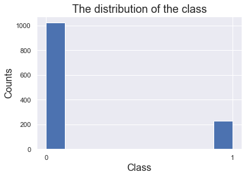

A Support Vector Machine (SVM) is a supervised machine learning algorithm that can be employed for both classification and regression purposes. SVMs are more commonly used in classification problems and as such, this is what we will focus
on in this post.
SVMs are based on the idea of finding a hyperplane that best divides a dataset into two classes, as shown in the image below.
Code
# import all the required librariesimport pandas as pdimport numpy as npimport matplotlib.pyplot as pltimport seaborn as snsimport osfrom sklearn.metrics import confusion_matrix, ConfusionMatrixDisplayfrom sklearn.model_selection import train_test_splitfrom sklearn.model_selection import GridSearchCVfrom sklearn.metrics import confusion_matrixfrom sklearn.metrics import precision_recall_fscore_supportfrom sklearn.metrics import accuracy_scorefrom sklearn.metrics import recall_scorefrom sklearn.metrics import f1_scorefrom sklearn import preprocessingfrom sklearn.metrics import precision_scorefrom sklearn.svm import SVC
Code
# read the csv filedf = pd.read_csv('../../data/hate_speech.csv',index_col=0)# only use the numerical data to predict the y variabledf = df.loc[:,['id','follower_count','friends_count','retweet_count','favorite_count','word_length','label']]df.head(5)
id
follower_count
friends_count
retweet_count
favorite_count
word_length
label
0
13857342
20161
780
0
0
10
0
1
13857342
20161
780
0
4
13
0
2
82522377
4
64
0
1
15
1
3
13857342
20161
780
1
30
11
0
4
930620467
18807
263
0
0
11
0
2 Class distribution
Code
#plot the distributionsns.set_theme()plt.hist(df.label.astype('string'))plt.title("The distribution of the class",fontsize=18)plt.xlabel("Class",fontsize=16)plt.ylabel("Counts",fontsize=16)
Text(0, 0.5, 'Counts')

The counts of the two classes are imblanced. The labels are binary value. In order to maintain the original imblanced distribution of the two classes, the dataset is not modified by means of upper-sampling, SMOTE, and other sampling methods
to deal with imblanced issue.
3 Baseline model for comparison
Code
#define a baseline model which random assign labelsdef random_classifier(y_data): ypred=[] max_label=np.max(y_data);#print(max_label)for i inrange(0,len(y_data)): ypred.append(int(np.floor((max_label+1)*np.random.uniform(0,1))))print("-----RANDOM CLASSIFIER-----")print("accuracy",accuracy_score(y_data, ypred))print("percision, recall, fscore,",precision_recall_fscore_support(y_data,ypred))random_classifier(df.label)
The accuracy for a random classifier is around 0.5, which makes sense to the random guess. The precision score is biased considering the imbalanced data distribution.
# normalize all the datascaler = preprocessing.StandardScaler()X_scaled = scaler.fit_transform(x_smote)# split the data into train,test data setX_train, X_test, y_train, y_test = train_test_split(X_scaled, y_smote, test_size=0.2, stratify = y_smote, random_state=42)
Overall, we select 5 numerical variable to represent the record data, and further leverage it to predict the text data.
5 Model Tuning
SVM calculate distance, therefore by normalizing the data, we can train our model much faster. Besides, hyperparemeter is significant to train a sub-optimal classification model. In this case, I leverage grid search to find out the best
paremeter for my svm model.
Code
#find the best hyperparametres with GridSearchCV libraryparameter=[ {"C":[1,10,100],"kernel":["linear"]}, {"C":[1,10,100],"kernel":["rbf"],"gamma":[0.1,.3,.5,.7,.9]}]grid_search = GridSearchCV(SVC(), param_grid=parameter, scoring="accuracy",cv=10)grid_search=grid_search.fit(X_train, y_train)print("The best hyperparametres are:",grid_search.best_params_)grid_search
The best hyperparametres are: {'C': 100, 'gamma': 0.9, 'kernel': 'rbf'}
In a Jupyter environment, please rerun this cell to show the HTML representation or trust the notebook. On GitHub, the HTML representation is unable to render, please try loading this page with nbviewer.org.
In this part, we use “GridSearchCV” function to help us find the beset parametres so that we don’t need to write codes and make some loops manually. The result shows that we should use rbf kernel and should set C as 100, and the gamma should be 0.9.
6 Final Result
Code
#fit the model with the best hyperparametresclf=SVC(C=100,kernel="rbf",gamma=0.9)clf.fit(X_train,y_train)y_pre=clf.predict(X_test)
Code
fig,ax = plt.subplots(figsize=(12,8))mx = confusion_matrix(y_test,y_pre)# cmd = ConfusionMatrixDisplay(mx,display_labels=['Positive','Negative'])group_names = ['True Neg','False Neg','False Positive','True Positive']group_counts = ["{0:0.0f}".format(value) for value in mx.flatten()]group_percentages = ["{:.2%}".format(value) for value in mx.flatten()/np.sum(mx) ]labels = [f"{v1}\n{v2}\n{v3}"for v1, v2, v3 inzip(group_names,group_counts,group_percentages)]labels = np.array(labels).reshape(2,2)sns.heatmap(data=mx,annot=labels,fmt='',cmap='Blues',square=True,annot_kws={"fontsize":14})ax.set_title('Confusion matrix',fontsize=16)plt.xlabel('Actual label',fontsize=18)plt.ylabel('Predicted label',fontsize=16)ax.set_xticklabels(['Negative','Positive'],fontsize=16)ax.set_yticklabels(['Negative','Positive'],fontsize=16)plt.savefig('./confusion_matrix.png')print("ACCURACY: "+str(accuracy_score(y_test,y_pre))+"\n"+"NEGATIVE RECALL (Y=0): "+str(recall_score(y_test,y_pre,pos_label=0))+"\n"+"NEGATIVE PRECISION (Y=0): "+str(precision_score(y_test,y_pre,pos_label=0))+"\n"+"POSITIVE RECALL (Y=1): "+str(recall_score(y_test,y_pre,pos_label=1))+"\n"+"POSITIVE PRECISION (Y=1): "+str(precision_score(y_test,y_pre,pos_label=1))+"\n" )
It seems that we have used the best paremeter, the recall and precision rate for this classification model reaches 70% around, which is better than a random classifier.
7 Conclusion
In this tab, we leverage SVM to solve the problems. The accuracy score shows that it is higher than the model we ouput with decision tree. But overall, it should still weak than the ensemble model, using random forest, or other boosting
ensemble model such as XGboost.